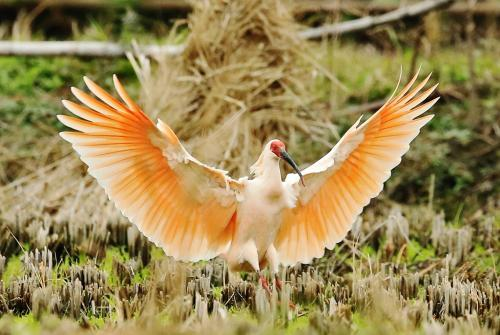
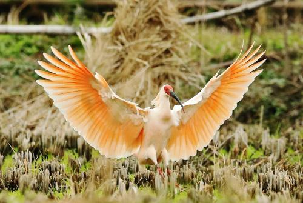

.jpg)
*
宝鸡是周秦王朝发祥地。公元前11世纪，周先祖之一的古公亶父率族人迁徙到岐山下的周原 （今宝鸡市岐山县），“古公乃贬戎狄之俗而营筑城郭室屋而邑别居之，作五官有司”（ 《史记·周本纪》）， 建立了周王朝早期的国家组织。这就是西周最早的都城岐邑，距今已3200多年。古公亶父被后世尊为太王。 周在古公亶父死后的季历和文王时期，国势发展很快，先后征服了西落鬼戎、 始呼、翳徒之戎，邻近的许多部落和方国也归附于周， 巩固了周族在渭水中游的统治，为伐纣灭商，建立西周王朝奠定了基础。
宝鸡市自元古代至第四纪地层发育齐全，经历多旋回构造变动和岩浆活动 以及复杂的变质作用，形成多种内生矿床和沉积矿床，矿产资源丰富。 境内已发现矿产地202处，发现各类矿种资源45种，有铁、铜、铅、锌、 镍、金、银、钨、钼、汞、黄铁等金属矿产，石灰石、电石灰石、大理石 、白云石、硅石、耐火粘土、萤石、磷块岩、石英岩等非金属矿产。 其中列入陕西省矿产资源储量表的矿种26种，矿区96处。已探明矿产储备资源 /储量潜在价值在全市前三位的矿种有：水泥用灰岩、磷、煤。宝鸡地区煤矿主要集中在凤县 ，有草滩沟、罗钵庵、扈家窑等煤矿，陇县娘娘庙、麟游北马坊也有分布。 全市共有各类采矿企业338户，共设置探矿权88个，勘察登记总面积2600平方公里。
宝鸡境内植物类型很多。植物区系以华北区系成分为主，华中、中国喜马拉雅区系成分也占重要地位。 森林植物主要集中在秦岭和关山，秦岭山地随海拔递升，依次有落叶阔叶林、针阔叶混交林、 针叶林和高山灌丛草甸等植被类型。植物资源丰富，宝鸡境内有资源植物2100多种， 仅秦岭主峰太白山就有种子植物1550多种。特别是宝鸡有极其丰富的经济植物， 据统计共有经济植物1000余种，太白山已发现的药用植物就有510多种，有广阔的综合利用前途。 渭北台原、渭河平原主要为大田农作物、蔬菜、果园和城市绿化等栽培植物类型 。[25]全市森林覆盖率53.78%。山区有林地面积64.3万公顷，种植作物包括苹果、 核桃、板栗、柿子、梨，桃子等。秦岭、关山的天然森林和在太白县的原始森林中还有野生果树， 如猕猴桃，五味子、山荆子、山楂、沙棘果等近百种。 野生中药材有500多种，其中有党参、当归、黄芪、天麻、杜仲、山萸、贝母等。[23]
野生动物资源主要分布在秦岭、关山山地，市境内有国家一级保护珍贵动物10种， 即大熊猫、金丝猴、羚牛、秦岭虎、云豹、豹、朱鹮、大鸨、黑鹳、白肩雕；另有国家二级保护动物18种。
.jpg)
.jpg) 

2017年，全市共有文艺团体133个，其中，专业文艺团体57个。 群众艺术馆、文化馆14个，公共图书馆 13个。农村乡镇文化站及文化中心117个， 文化活动室1657个，农家书屋 1713个，数字农家书屋130个。非物质文化遗产保护中心 13个， 艺术科研机构1个，艺术表演场所2座。文化产业示范基地（单位）19个， 其中国家级文化产业示范基地2个,省级文化产业示范园区1个， 省级文化产业示范基地（单位）16个。2016年，文化及相关产业增加值39.27亿元， 比上年增长13.0%；占全市地区生产总值的比重为2.03%。 2017年，全市有市级广播电台1座，电视台1座，县区级广播电视台10座。 全市电影放映机构34个。全市广播覆盖率99.94%，电视覆盖率99.97%。 2017年，全市共有各类文物点3436处，其中国家重点文物保护单位21处， 省级重点文物保护单位97处，县级文物保护单位273处。全市馆藏文物5万余件(组)， 等级以上珍贵文物10719件(组)，其中， 国家一级文物374件(组)，二级文物1303件(组)，三级文物9042件(组)。[27]
截至2017年年末，全市境内公路总里程16822公里，公路密度92.85公里/百平方公里（含村公路）。 全年公路旅客运输量9434万人次,比上年下降0.7%，旅客运输周转量19.78亿人公里， 下降0.6%; 货物运输量12956万吨，增长9.6%，货物运输周转量114.14亿吨公里， 增长11.3%。年末拥有营运载货车辆21530辆，营运客车1883辆。全市共有29家出租车公司, 共有出租汽车3218辆;19家公共汽车公司，共有公共汽车1572辆。 年末民用汽车保有量32.20万辆，比上年末增长15.2%。其中，载客汽车28.96万辆， 增长16.2%；载货汽车2.61万辆，增长9.4%。 宝鸡自古就是交通要塞，古代有大散关（San-kuan Pass），现代有宝鸡铁路枢纽。 宝鸡铁路枢纽为中国重要铁路枢纽之一，是通往中国西北、西南铁路交通的主要咽喉通道。 为陇海铁路、宝成铁路、宝中铁路、西宝客运专线（西宝高铁） 、宝麟铁路、宝南铁路、宝鸡至兰州高铁（宝兰客运专线）交汇点。[39]